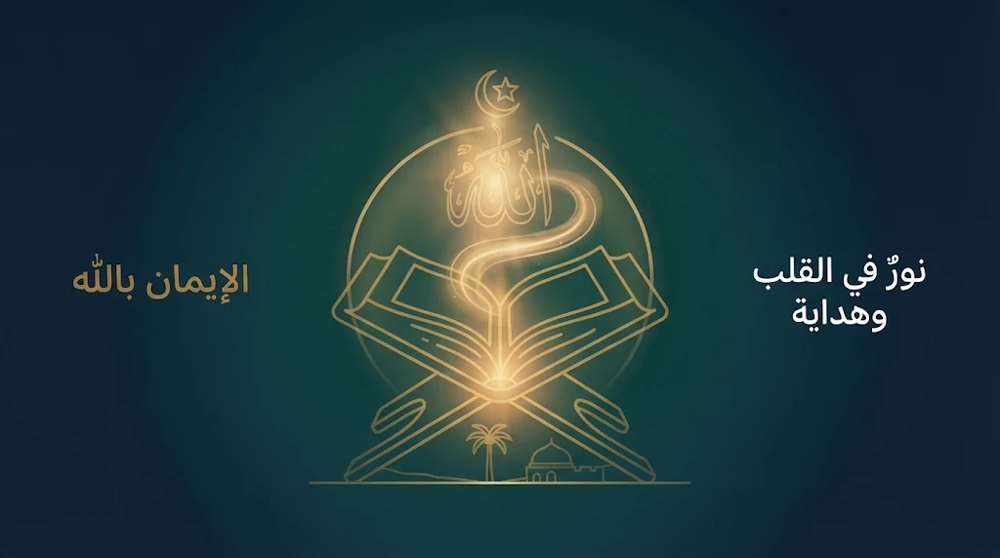
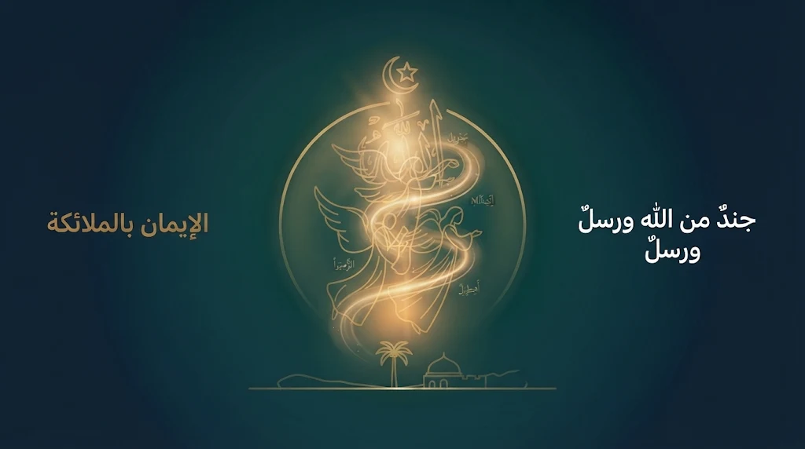
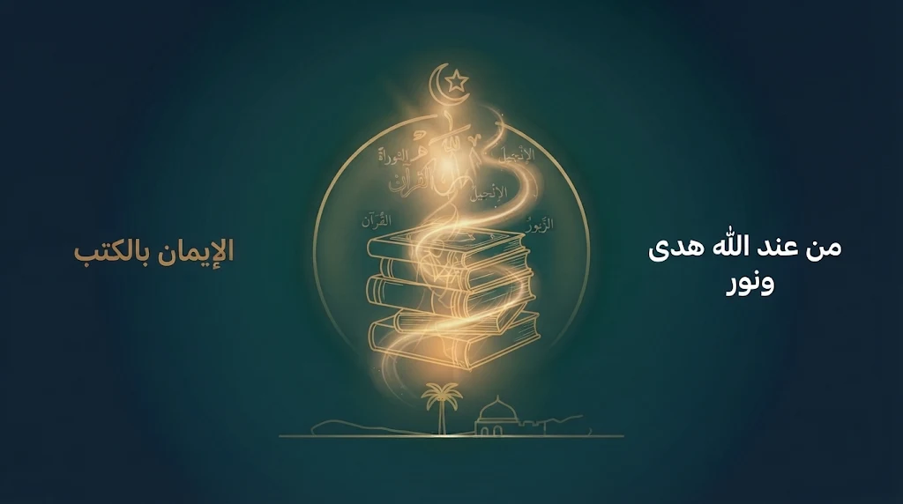
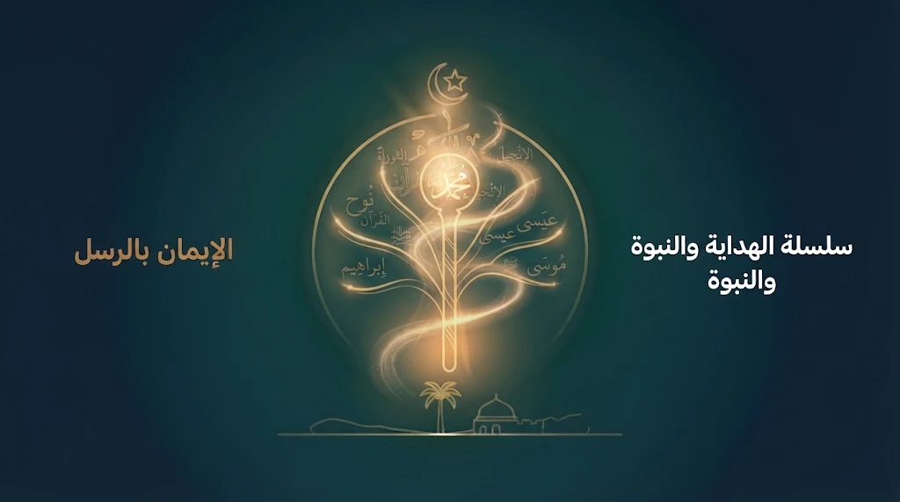
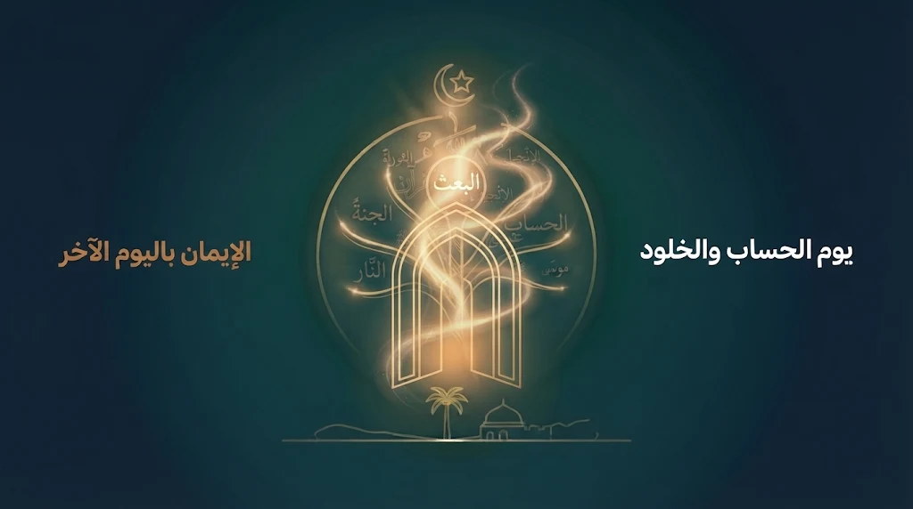
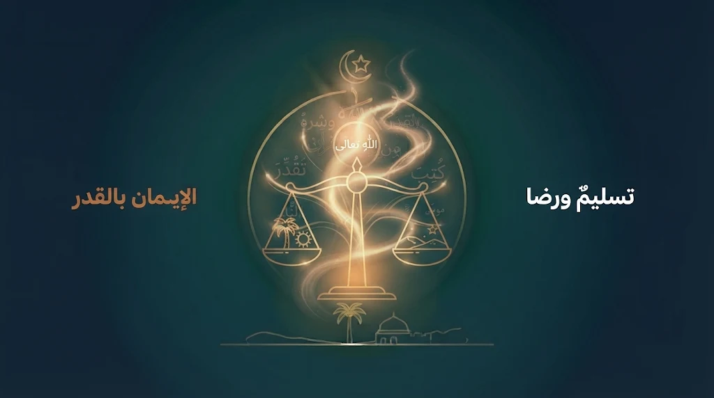

الركن الاول
1 . الايمان بالله

- التصديق الجازم والاعتقاد الراسخ بوجود الله تعالى وتفرده بالربوبية والألوهية والأسماء
والصفات، مع الانقياد والطاعة له ظاهراً وباطناً
الركن الثاني
2 . الايمان بالملائكة

- التصديق الجازم بوجودهم كعالم غيبي مخلوق لله من نور
الركن الثالث
3 . الايمان بالكتب

- التصديق الجازم بأن الله تعالى أنزل كتباً على رسله لهداية الناس
الكتب السماوية التي انزلها الله على الرسل :
- الصحف: أُنزلت على إبراهيم عليه السلام (كما ذُكر في القرآن صحف إبراهيم وموسى عليهما السلام)
- التوراة (وصحف موسى): أُنزلت على موسى عليه السلام
- الزبور: أُنزِل على داود عليه السلام
- الإنجيل: أُنزِل على عيسى عليه السلام
- القرآن الكريم: أُنزِل على محمد صلى الله عليه وسلم، وهو آخر الكتب ومهيمن عليها
الركن الرابع
4 . الايمان بالرسل

- التصديق الجازم بأن الله تعالى بعث في كل أمة رسولاً يدعوهم إلى عبادة الله وحده
والكفر بما يعبد من دونه
الركن الخامس
5 . الايمان باليوم الاخر

- التصديق الجازم بيوم القيامة وكل ما أخبر الله ورسوله بأنه يقع بعد الموت من أحداث وحقائق غيبية
الركن السادس
6 . الايمان بالقدر خيره وشره

- التصديق الجازم بأن الله قدّر كل شيء في علمه وكتبه، وأن ما شاء كان وما لم يشأ لم يكن، مع بقاء مشيئة الإنسان واختياره الذي يُحاسب عليه